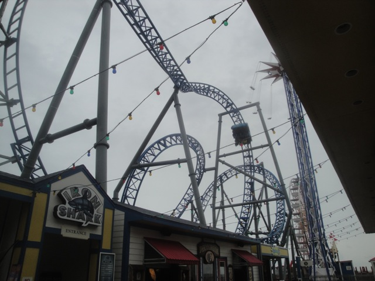
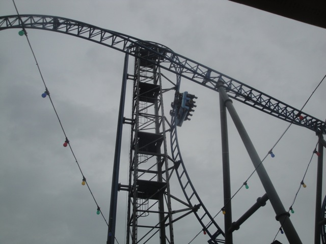
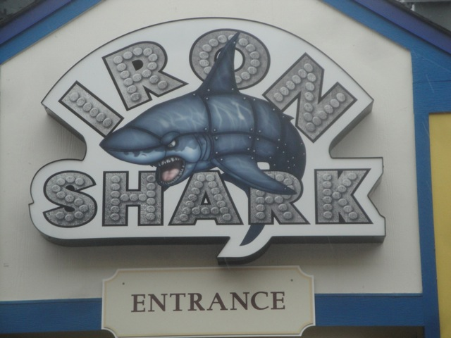

| |
Iron Shark Review

For today's review, we are heading to the Galveston Pier to review Iron Shark. This is the parks Euro Fighter, their star attraction, and their only roller coaster. And I must admit. It's a really good ride. Definetly my favorite non-themed Euro Fighter. It's just a really good ride. So let's not waste any more time, pull down the lap bars, and off we go. Yeah, this ride has lap bars only. I love it for that. More Eurofighters need to follow suit. We begin to climb the vertical lifthill, staring at nothing but the sky, as well as a little bit of twisted track that we're about to go through. Yeah. We're gonna have some fun. We then reach the top of the lifthill, and we slow down. Yeah, all the Eurofighers have the "Goliath Effect" where they slow down at the top. But hey, no big deal. And then we go down the first drop. We get a little bit of airtime as we get yanked down beyond 90 degrees to the pier. WEE!!! This is a lot of fun. We then head up into what is apparently an immelmahn, but no. This is more of a sort of...reverse twist and dive. It's like a half loop, that just sort of unflips at the top. Regardless, we flip upsidedown as we rise into the sky, and then are flipped rightside up as we're heading right over the pier. There's a little straight track, and then BAM!!! Spiral Drop. It's a lot of fun as we twist and dive straight back to the ground, or rather, the pier. Hell, some call that a Dive Loop. Eh...I'm not sure. That spiral drop was the track we saw climbing up the lifthill. We then go through this sort of S Bend that gives us some nice laterals. It's also a lot of fun. We then head through a cutback. This is very similar to the cutback you see on other Eurofighters, and yeah. It's a lot of fun. We exit out of that and into an incline loop. Another semi-inversion that it's hard to tell. But hey, I'll count it. And either way, it's a ton of fun, as I really like these elements. And with that, we glide straight into the brake run. And that's Iron Shark. On the downside, it's a really short coaster. But hey. It has a lot of speed, fun, and twistiness that they really compress into a tiny little space. And Iron Shark is just a really fun ride. If you're at the Galveston Pier. You HAVE to ride this ride. It's by far the star attraction of the park and one of the better Euro Fighters as well. Give it a ride. =)
8/10
Location: Galveston Pier
Opened: 2012
Built by: Gerstlauer
Last Ridden: July 17, 2013
Iron Shark Photos





Home
|